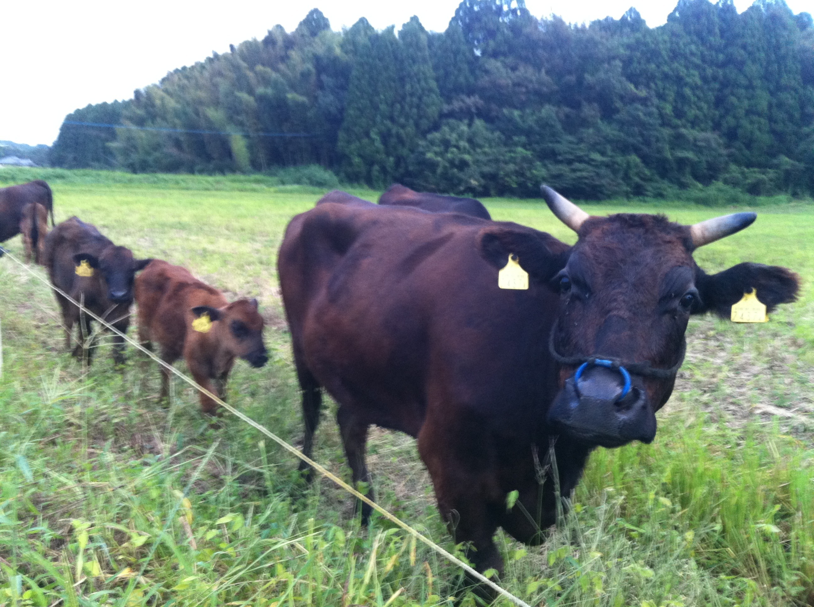
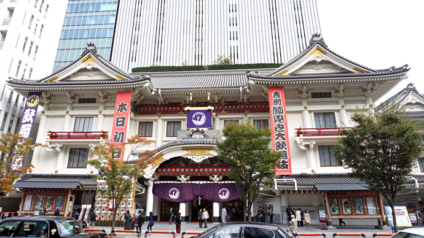

津野です
私の情報
生い立ち
宮崎の山奥で宮崎牛に囲まれて育ちました。
高校生まで、実家近くの牧場で牛の餌やりやお散歩などをして暮らしていました。
上京しても3年ぐらいは宮崎の方言訛りが消えず苦労しました。
今でもまれに宮崎の方言が出ることがあります。
趣味
- プログラミング
- 株式投資(ほとんど現金を持っておらず、我が家の資産は全部株です)
- 不動産情報収集(宅地建物取引士の資格を持っています)
- 企業情報収集(非上場企業の決算収集や、上場企業の子会社情報収集等…)
- スポーツ観戦(川崎フロンターレ、横浜DeNAベイスターズファンです)
- 競馬(ほとんど馬券は買いません。一口馬主になって馬を応援しています。)
SNSへのリンク集
好きな動画
会社の場所